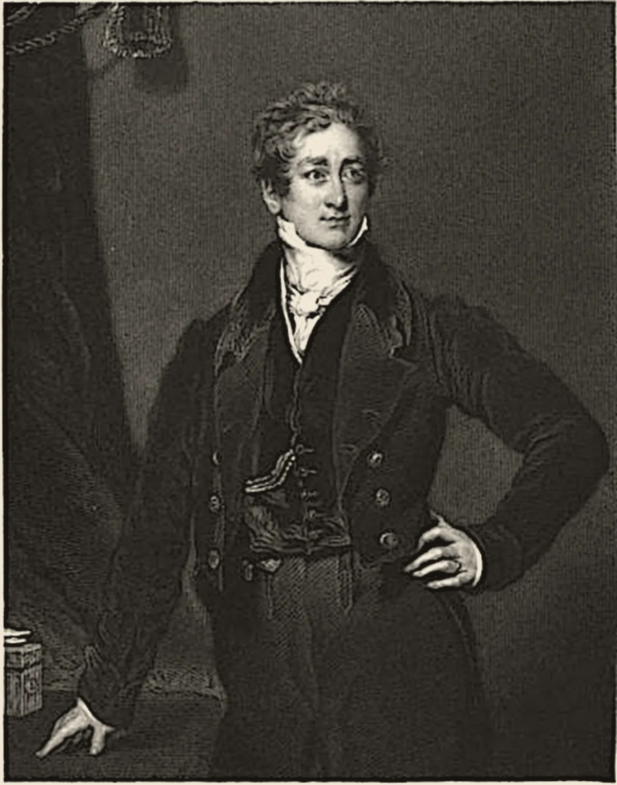

· Edición 39 · 4 min de lectura
Un detenido murió tras descargas de táser y hay cuatro policías capturados
Revisada el · 2 actualizaciones posteriores a la publicación

Un detenido murió tras descargas de táser y hay cuatro policías capturados
Ver todo el tema, de principio a fin →
En pocas palabras. Donovan Balanta, de 34 años, murió en septiembre tras ser detenido en Soacha; según la Fiscalía, recibió golpes y descargas de táser ya esposado. Cuatro policías fueron capturados, seis años después de la muerte de Javier Ordóñez en un caso parecido. En Louisville (Estados Unidos), un entrenamiento para bajar la tensión redujo en 28% los casos de uso de la fuerza.
El dato curioso. El nombre del táser salió de una novela juvenil de 1911, Tom Swift and His Electric Rifle, «Tom Swift y su rifle eléctrico». Décadas después, el ingeniero Jack Cover bautizó su invento con las iniciales del libro: TSER. Como no se podía pronunciar, le agregó una A: «Thomas A. Swift's Electric Rifle». El personaje nunca tuvo segundo nombre. La A está ahí solo para que la palabra suene.
Qué pasó. Según la Fiscalía, Balanta pidió varias veces atención porque le costaba respirar y le dolía el pecho. Otro detenido pidió que lo ayudaran.
Pasó unos 20 minutos sin atención médica, según la Fiscalía. Lo llevaron al hospital cuando quedó inconsciente.
La Fiscalía investiga el caso con enfoque étnico-racial: Balanta era afrocolombiano. Los capturados no han sido condenados y se presumen inocentes.
9 de septiembre de 2020
Muere Javier Ordóñez
Detenido en Bogotá, recibe descargas de táser de policías. Muere horas después.
Julio de 2021
Primera condena
Un patrullero acepta cargos por homicidio y tortura agravados: 20 años de prisión.
Abril de 2023
Segunda condena
Un juez declara culpable a otro patrullero.
20 de septiembre de 2026
Muere Donovan Balanta
Detenido en Altos de Cazucá, Soacha, tras una riña entre vecinos.
23 de septiembre de 2026
Siete policías apartados del cargo
La primera versión de la Policía habló de una afectación repentina de salud. Después apareció un video de los golpes y las descargas.
19 de octubre de 2026
Cuatro policías capturados
Un mayor, comandante del CAI de Cazucá, un subintendente y dos patrulleros. Hay una quinta orden de captura.
Esta semanaPendiente
Audiencias ante un juez
Fuente: Telemundo; El Espectador; El Heraldo; Publimetro; El Tiempo; Semana
¿Por qué pasa?
- Una regla amplia. El protocolo de la Policía, la Resolución 02903 de 2017, permite el táser ante un «peligro potencial en el procedimiento». En 2020, la Personería de Bogotá demandó la norma por permitir su uso sin límites objetivos.
- El riesgo no termina con la descarga. En 2012, el cardiólogo Douglas Zipes describió ocho casos de paro cardíaco tras descargas en el pecho. Recomendó vigilar a la persona después.
- No es un caso aislado. Temblores, una organización que registra la violencia policial, contó 109 hechos en 2024, con 144 víctimas, y 94 en 2025, con 122.
¿Alguien lo ha resuelto? Hay medidas que se han medido.
En 2019, la policía de Louisville entrenó a sus agentes para ganar tiempo, hablar y evitar la escalada. Un estudio de la Universidad de Cincinnati, de 2022, halló 28% menos casos de uso de la fuerza, 26% menos ciudadanos heridos y 36% menos policías heridos.
En Inglaterra y Gales, quien recibe una descarga y llega detenido pasa por una revisión de salud antes de seguir en el calabozo.
Allí, además, una oficina independiente de la Policía, la IOPC, investiga y publica cada año las muertes tras un contacto policial.
Pero ojo.
- Las cámaras no bastan. Una revisión sistemática de 2020, de Cynthia Lum y otros, halló que las cámaras en el uniforme reducen las quejas, pero sin un efecto claro sobre el uso de la fuerza.
- El táser no es inofensivo. En 2017, Reuters contó 1.005 muertes en Estados Unidos después de una descarga. Obtuvo 712 autopsias: en 153, el táser figuraba como causa o factor. El fabricante sostiene que nadie ha muerto por el efecto directo de la descarga.
- Un solo estudio. Lo de Louisville viene de una ciudad; falta ver si se repite en otras.
Lo que ya habíamos contado. El 10 de octubre escribimos sobre las nuevas reglas para que la Policía atienda las protestas (ver esa edición). Hoy la pregunta es otra: qué límites tiene la fuerza cuando la persona ya está detenida.
Qué hacer con esto
Cómo prepararse. Si presencia un procedimiento, grabarlo es legal. Anote la placa y la hora. En este caso, un video mostró lo que la primera versión no decía.
Ojo con el cuento. «Siete policías apartados del cargo» suena a sanción, pero es una medida mientras se investiga. La primera versión oficial es un punto de partida, no la conclusión.
Dos lecturas
Las dos posturas sobre el tema, en su mejor versión
Mantener el táser, con mejores reglas. Un exgeneral de la Policía recordó en 2020 que el táser busca evitar el arma de fuego. Lo que falta es formación, supervisión de cada uso y una revisión médica después de cada descarga.
Suspenderlo hasta que haya límites claros. La Personería de Bogotá pidió en 2020 suspender la norma. Si el arma se usa sobre personas esposadas y nadie lo revisa a tiempo, primero deben venir las reglas y el control de afuera.
Quién decide y cuándo
Quién decide. Un juez de control de garantías, si las capturas fueron legales y si los policías quedan detenidos. El reglamento del táser es de la Policía Nacional.
Cuándo. Las audiencias son esta semana. No hay fecha para revisar el reglamento.
Cómo participar. El Código de Policía permite a cualquier persona grabar un procedimiento policial.
Seguimiento de la decisión
Se tomó · plazo:
Juez de control de garantías: Decidir si legaliza la captura de cuatro policías, si avala la imputación por homicidio y tortura agravados por la muerte de Donovan Balanta y si quedan detenidos mientras avanza el proceso.
El 26 de octubre, después de varias suspensiones, el juez de control de garantías ordenó la detención en centro carcelario de los cuatro policías, como pedía la Fiscalía, mientras avanza el proceso por homicidio y tortura agravados; ellos se declararon inocentes.
Para conversar
La pregunta. ¿Quién debería investigar a la Policía cuando alguien muere en sus manos: la misma institución, un juez o una oficina aparte? ¿Y qué podríamos hacer para que el entrenamiento en bajar la tensión llegue a cada estación?
Para leer más
Libros para seguir con el tema
Above the Law: Police and the Excessive Use of Force, de Jerome H. Skolnick y James J. Fyfe (Free Press, 1993). Escrito después de la golpiza a Rodney King en Los Ángeles, examina por qué la fuerza excesiva se vuelve costumbre dentro de una institución y qué la corrige. Fyfe fue policía en Nueva York durante 16 años. No conocemos traducción al español.
¿Le interesa ver las fuentes?
Todos los documentos y datos que usamos
33 fuentes: 4 académicas, 4 oficiales, 4 de organizaciones, 16 de prensa, 5 de referencia.
- Prensa El Tiempo. Tortura y omisiones: los detalles de la investigación contra cuatro policías capturados por la muerte de Donovan Balanta
- Prensa El Tiempo. Cuatro policías fueron capturados por su presunta participación en las agresiones que provocaron la muerte de Donovan Balanta en Soacha
- Prensa Semana. Capturan a cuatro policías por muerte de Donovan Balanta, quien falleció tras descargas con taser: hay un mayor y un subintendente
- Prensa El Heraldo. Imputarán por presunto homicidio y tortura agravada a cuatro policías que habrían participado en la muerte de Donovan Balanta en Bogotá
- Prensa La Silla Vacía. Capturados cuatro policías implicados en asesinato de Donovan Balanta
- Prensa Publimetro. Apartan a siete policías por caso de Donovan Balanta: murió tras procedimiento en el que usaron un taser
- Prensa Cambio. Nuevo video muestra de frente los golpes y descargas con taser que recibió Donovan Balanta antes de su muerte en medio de un procedimiento policial
- Organización Temblores ONG. Reporte de hechos de violencia policial en Colombia durante 2025
- Organización Temblores ONG. Reporte de hechos de violencia policial en Colombia durante 2024
- Prensa El Tiempo. Taser X2, el arma que habría usado la Policía en procedimiento contra abogado
- Prensa El Universal. Muerte de Javier Ordóñez cuestiona uso de la fuerza policial
- Oficial Personería de Bogotá (comunicado publicado por Ámbito Jurídico). Personería de Bogotá demanda norma que permite el uso de pistolas taser
- Prensa El Colombiano. Abogado murió en procedimiento de Policía con taser
- Prensa Telemundo. Dramático video: muere tras suplicar que dejen de darle descargas con pistolas taser
- Prensa El Espectador. Caso Javier Ordóñez: expolicía Juan Lloreda es condenado a 20 años de prisión
- Prensa El Heraldo. Caso Javier Ordóñez: condenan a policía implicado en muerte del universitario
- Académica Universidad de Cincinnati (sobre Engel, Corsaro, Isaza y McManus; Criminology & Public Policy, 2022). UC-led research first to show benefits of police de-escalation training
- Académica National Policing Institute (Engel, Corsaro, Isaza y McManus). Examining the impact of Integrating Communications, Assessment, and Tactics (ICAT) de-escalation training for the Louisville Metro Police Department: initial findings
- Académica Campbell Systematic Reviews (Lum, Koper y otros, 2020), resumen en la biblioteca del Departamento de Justicia de EE. UU.. Body-worn cameras' effects on police officers and citizen behavior: a systematic review
- Académica Universidad de Indiana, Facultad de Medicina (sobre Zipes; Circulation, 2012). Indiana University cardiologist reports stun guns can result in sudden cardiac arrest and death
- Organización Equal Justice Initiative (sobre la investigación de Reuters, 2017). Investigation finds over 1,000 people died after police used Tasers
- Oficial Independent Office for Police Conduct (IOPC). IOPC publishes figures on deaths during or following police contact for 2024/25
- Oficial Independent Office for Police Conduct (IOPC). IOPC Director General comments on annual deaths statistics report 2024/25
- Organización Faculty of Forensic & Legal Medicine (FFLM). Healthcare of detainees in police custody subjected to conducted energy devices (CED)
- Oficial Congreso de la República (Ley 1801 de 2016, artículo 21, vía leyes.co). Código Nacional de Policía y Convivencia, artículo 21: carácter público de las actividades de policía
- Referencia OUPblog (Oxford University Press). Tase
- Referencia Dictionary.com. Taser
- Referencia Proyecto Gutenberg. Tom Swift and His Electric Rifle; Or, Daring Adventures in Elephant Land
- Referencia Historic UK. Sir Robert Peel
- Prensa Portafolio. Luego de una larga jornada, a sanción presidencial pasó el Presupuesto General de la Nación para 2027
- Prensa GBM (despacho de agencia). Congreso de Colombia aprueba presupuesto de gastos para 2027 por 634,9 billones de pesos
- Prensa La República. La plenaria del Senado aprobó el Presupuesto General de la Nación para 2027
- Referencia KrimDok, Universidad de Tubinga (catálogo). Above the law: police and the excessive use of force
Glosario
Las palabras técnicas, explicadas
- Táser: arma que dispara dos dardos conectados por cables y descarga electricidad para paralizar los músculos por unos segundos.
- Juez de control de garantías: juez que revisa que la captura y las primeras actuaciones de la Fiscalía respeten los derechos del procesado.
- Medida de aseguramiento: decisión del juez de detener a alguien, o ponerle condiciones, mientras avanza el proceso.
- CAI: Comando de Atención Inmediata, el puesto de policía de barrio.
- IOPC: Oficina Independiente de Conducta Policial de Inglaterra y Gales.
- Revisión sistemática: estudio que reúne y compara todos los estudios serios sobre una misma pregunta.
Nota metodológica
Cómo se hizo esta edición y qué no pudimos verificar
Escogimos un nudo que se repite: dos muertes tras descargas de táser y golpes bajo custodia policial, en 2020 y en 2026, con un hecho reciente, las capturas del 19 de octubre. Es un tema de violencia y muerte, así que va sin humor y sin la sección de la paradoja.
Hicimos unas 45 búsquedas en español e inglés: barrido de Colombia y del mundo del 17 al 20 de octubre, el resultado del presupuesto y búsquedas dirigidas sobre el caso, el táser y la evidencia sobre el uso de la fuerza. No pudimos abrir los documentos completos; trabajamos con resúmenes y resultados de búsqueda. De 33 fuentes, 17 no son de prensa.
Quedó sin verificar o con límites:
- Los hechos del caso vienen de la prensa que cita a la Fiscalía; no leímos la imputación. Los medios no coinciden en lo que dice el dictamen de Medicina Legal (unos hablan de las descargas, otros de una arritmia), así que no lo usamos.
- Las cifras de Temblores las tomamos de resúmenes de sus informes; su conteo depende de los casos que logra verificar y no es un registro oficial.
- El estudio de Louisville compara antes y después del entrenamiento; las cifras vienen del comunicado de la universidad y del informe inicial, no del artículo.
- Lo de Zipes es una serie de ocho casos: muestra que puede pasar, no qué tan seguido.
- Las 36 horas y el carácter público de las audiencias van marcados como conocimiento general.
Puntaje de impacto. Filtro primero (las cuatro condiciones de nudo) y luego puntaje de 1 a 3 en alcance, gravedad, duración, cercanía y decisión en curso; gravedad y cercanía valen doble (máximo 21).
| Tema | Alcance | Gravedad | Duración | Cercanía | Decisión | Total | Resultado |
|---|---|---|---|---|---|---|---|
| Uso de la fuerza bajo custodia policial | 2 | 3 | 2 | 3 | 2 | 18 | Elegido (edición 39) |
| Presupuesto de 2027 | 3 | 2 | 2 | 3 | 3 | 18 | Ya tratado; va como actualización |
| Reclutamiento de niños | 1 | 3 | 3 | 3 | 1 | 17 | Sin hecho nuevo en la última semana |
| Dengue | 2 | 3 | 1 | 3 | 1 | 16 | Sin decisión en curso |
| Infecciones en hospitales | 1 | 3 | 2 | 3 | 1 | 16 | Cifras con corte a mayo |
| Segunda vuelta en Brasil (contexto) | 3 | 2 | 2 | 2 | 3 | 16 | Tratado el 5 de octubre |
El uso de la fuerza bajo custodia pasa las cuatro condiciones de nudo: se repite (2020 y 2026, y los registros de Temblores), tiene un mecanismo (una regla amplia, sin revisión médica obligatoria y con una primera versión a cargo de la propia institución), alguien lo puede cambiar (la Policía Nacional, el Ministerio de Defensa, el Congreso y la Fiscalía) y el daño se mide (122 víctimas de violencia policial en 2025, según Temblores). Hoy hay una sola edición.
El grabado es un retrato de Robert Peel, grabado por John Cochran en 1836 a partir de una pintura de Thomas Lawrence, en dominio público, vía Wikimedia Commons. Elegimos una imagen simbólica, sin escenas de violencia.
El libro: no pudimos consultar el catálogo de Santo & Seña, así que va sin enlace. Autores, año y editorial los confirmamos en el catálogo KrimDok de la Universidad de Tubinga.